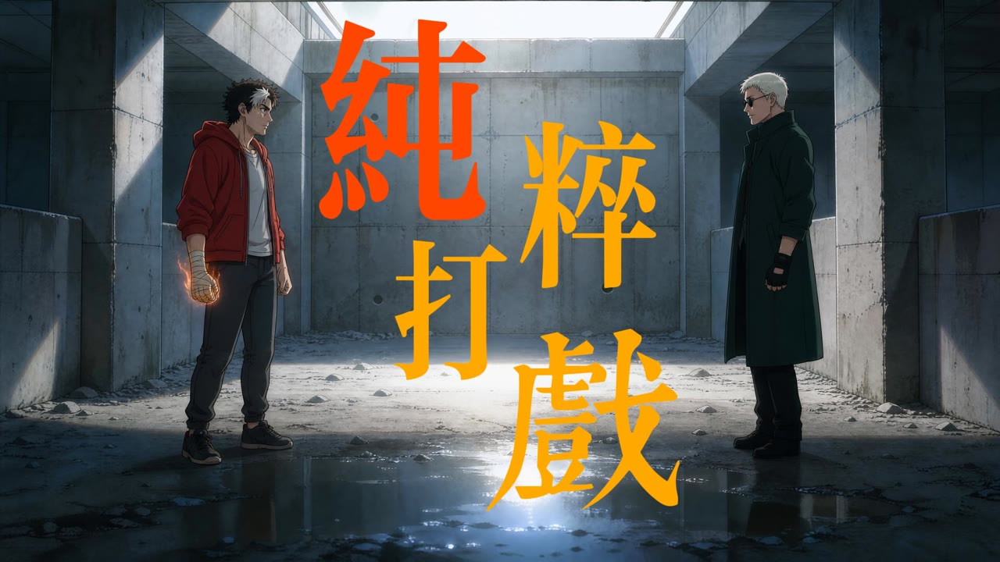
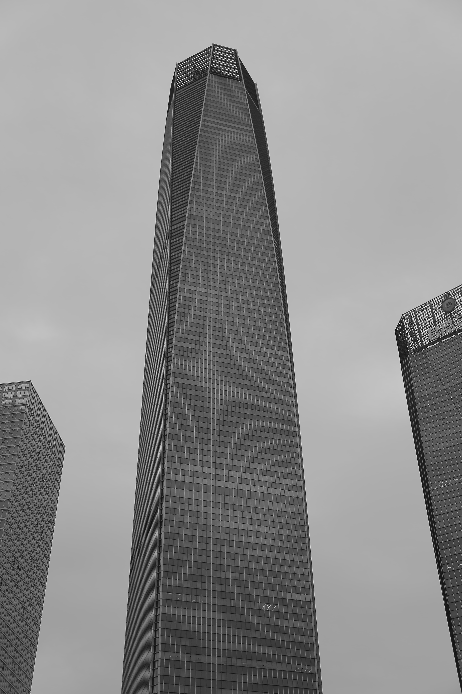
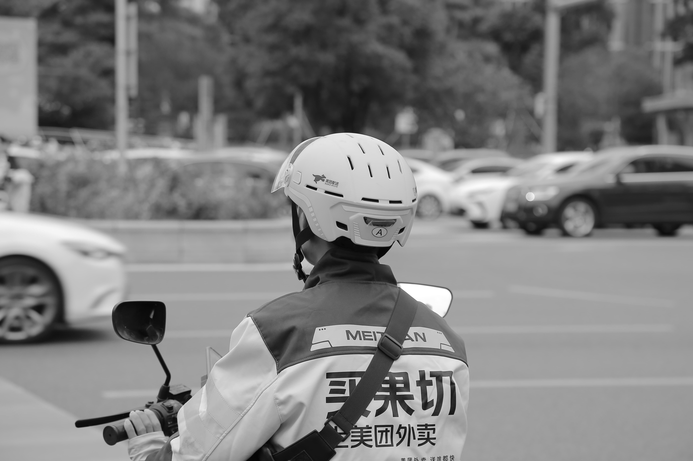
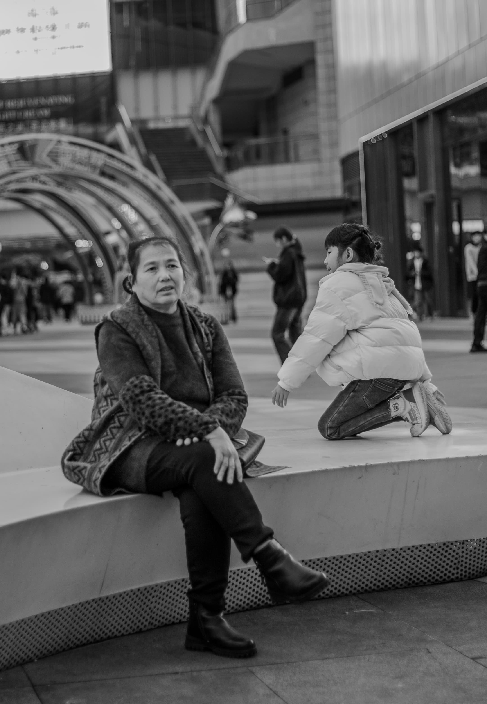
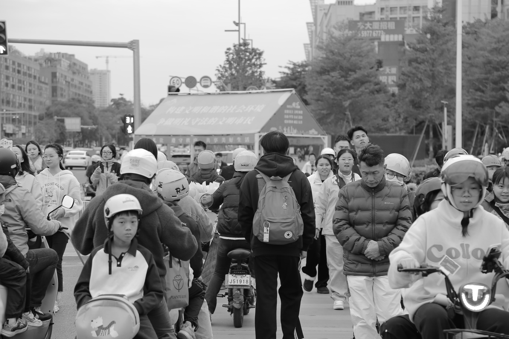
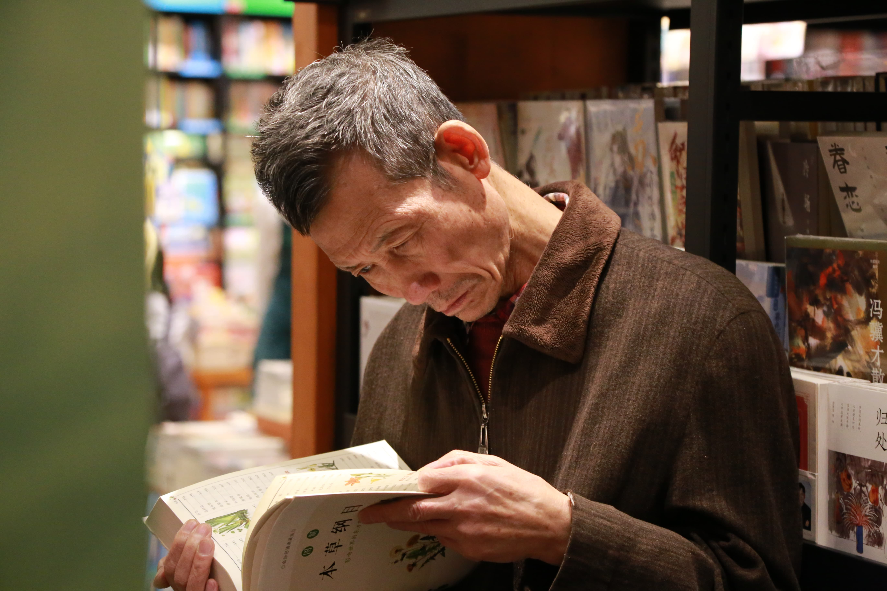
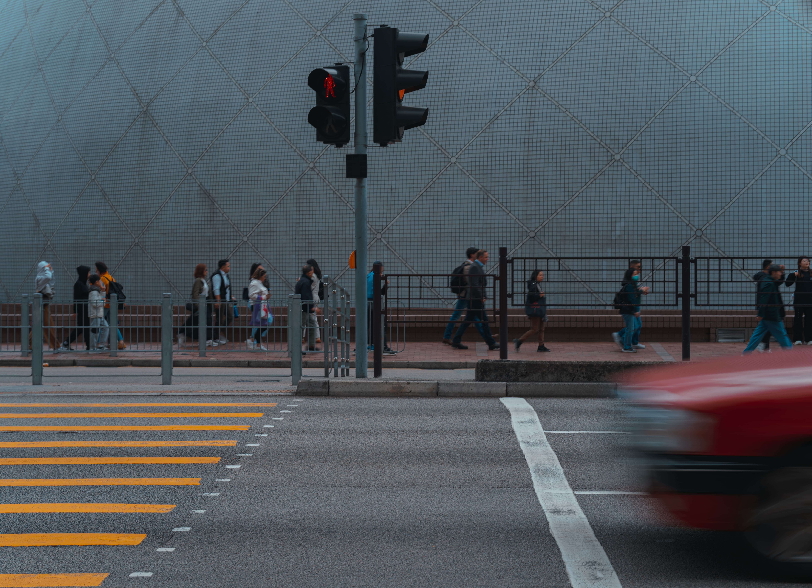

纯粹打戏
混凝土废墟里的纯粹交手。无对白，靠动作节奏、镜头切换与打击特效撑满全片。
以文字为根，以影像为翼
汉语言文学专业
以文字为锚，在剧本、诗歌、小说的广阔海域里航行。
相信每一个字都有重量，每一帧画面都有温度。好的文案不是修辞的堆砌，而是对世界最诚恳的凝视与翻译。
现寻求影视传媒 / 文案策划 / 新媒体内容方向的创作岗位，希望用文字为品牌找到它最灵魂的声音。
之间——人像 之一
人与人之间，总有一段未说出口的距离
之间——人像 之二
镜头是第三种目光
之间——人像 之三
每一张脸都是一部未写完的小说
之间——人像 之四
不必说话，让光影替你开口
之间——人像 之五
眼神是最诚实的语言
之间——人像 之六
在快门落下之前，我们曾对视过
之间——人像 之七
侧脸是一首没有标题的诗
之间——人像 之八
我们都是彼此镜头里的陌生人

城市切片 之一
街角的光，是这个城市最诚实的语言

城市切片 之二
斑马线上的交响曲

城市切片 之三
每一扇橱窗都藏着一个故事

城市切片 之四
傍晚六点，下班的人流如潮水

城市切片 之五
雨天的城市是另一个世界
城市切片 之六
高楼的阴影里，有人在吃午饭

城市切片 之七
深夜便利店的光，是城市最后的温柔
城市切片 之八
天桥上，我拍下了整座城市的背影
城市切片 之九
凌晨四点的街道，只有扫街人和我醒着
城市切片 之十
城市从不说话，但它记得每一个路过的人
用 AI 影像工具完成的漫剧与短片。从分镜、动作节奏到镜头运动逐镜把控，把文字脚本变成会动的画面。

混凝土废墟里的纯粹交手。无对白，靠动作节奏、镜头切换与打击特效撑满全片。
故事梗概
快递员小文因一次换货失误，被客户老陈钻了平台规则的空子。价值近两千的快递退不回去，公司要把损失算在他账上。小文多次上门追讨，老陈夫妇却始终避而不见。一次对峙中，小文发现老陈家水阀可以控制，愤而关阀逼其现身。门开后，老陈反咬一口，威胁报警。沉默中，小文从快递袋里抽出一把刀——这不是他第一次被“规则”逼到墙角。剧本以快递行业年均1500亿件的业务量新闻开场，用冰冷的数字对照一个快递员被系统碾碎的尊严，追问：当“容忍”成为底层唯一的生存策略，“自由”还剩多少空间？
经典对白
场景：逼仄的出租屋里，小文边听电视新闻边吃泡面。电话响起。
（电话铃声：叮铃……叮铃……小文不接。再次响起，小文不情愿地接了。）
公司领导老杨
喂，小文，打你这么多个电话都不接，干什么去了？昨天那个换错货的快递退回去没有啊？
快递员小文
老杨，不好意思啊，刚刚在洗澡，没听见。那个快递我昨天又打了好几个电话都不接，去到他们家门口，一盏灯都看不到。
公司领导老杨
那明天就再去，打不通就一直打，货不管怎样都要退回去，里面的东西可不便宜，快两千了，退不回去，算你账上啊？
快递员小文
我也是没办法，找不到人。
公司领导老杨
叫你当时不看清楚，说了按流程办事，规规矩矩的，拍照拍仔细，拍清楚一些不就好了，你看，让人钻了空子，倒打你一耙，早都跟你说了。
快递员小文
老杨，你也不是不知道，一天这么多货，一时我也看不过来，时间也不允许，快递收多一单就多一单钱嘛。
公司领导老杨
行行行，别说这么多，不管时间允不允许，规矩就是规矩，如果商家那边不收货，明天这个货退不回去，就算你账上了，知道不，（小声）拖好几天了。
（嘟……电话挂断。小文继续吃泡面。电话再次响起。）
小文
喂，妈。
妈妈
儿子，吃饭了吗？
小文
吃着呢。
妈妈
工作怎么样了？
小文
还能怎么样，刚开始嘛，一步步做。
妈妈
工作就好好工作，别像你爸天天出去赌，没钱了还赌，说两句还动起手来了。
小文
你们怎么老是这样。
妈妈
家里也没什么钱了，你爸年纪也大，你现在出来工作，每个月记得给家里打些钱回来。
小文
妈，我现在才出来两个多月，没攒下什么钱。
妈妈
我知道我知道，但是记住千万别出去乱花钱，存着。
小文
我没有乱花钱，泡面我都吃上了，你还想我怎么乱花钱。
妈妈
还有一件事我不敢和你说，你弟弟，他去卖血了。
（小文把电话丢在桌子上，不想听。）
妈妈
（声音变模糊） 我在他抽屉发现了献血证，一个月就去两次，今年去了差不多二十次了，急死我了。我不敢问他，我就去那个血浆站问，他们说卖一次血就有300块，他肯定是没钱花了，你爸又不理他了，所以他才出去……
（嘟……小文把电话挂断，然后继续吃面，随后点起一根烟。）
创作手记
这个剧本的灵感来自一条真实新闻：一位快递员因客户恶意赖货，悍然拔刀。我好奇的是——当“服务者”与“消费者”的身份被平台规则固化，暴力是如何从系统里“泄漏”到个体之间的？
开场那段1500亿件快递的新闻播报，是我刻意设计的“反讽装置”。数字越庞大，小文的个体处境越渺小。我试图用新闻的“宏大叙事”与出租屋的“逼仄现实”形成对位，让观众在两种语态的切换中感到不适。
方言念白和心跳声的运用，是我对“底层叙事”的一种形式探索。小文不是恶人，老陈也不是——他们只是被困在同一个系统里的两个普通人。那把刀的出现，不是戏剧性的高潮，而是系统暴力的必然结果。我想问的其实是：如果我们都是这个系统的一部分，“容忍”到底是谁的自由？
故事梗概
凌晨，镇上一条偏僻小路，两个落魄男人合伙开了一间只卖薯片的小卖部，从无一人光临。圆圆嗜睡，角角焦虑，两人在等待“开市”的漫长时间里，迎来两位顾客：戴满钻戒的夸夸小姐要买“一模一样的钻戒”和“一模一样的口红”，摄影师拍拍要“定格”他们的时间。最终，薯片被扔光，小卖部被“买走”，而他们只换来一张“最有意义的照片”。天亮之前，他们依然没有收入。
经典对白
场景：夸夸小姐进入店铺，要求买钻戒。
夸夸
（把戴满了钻戒的手放在台面上，圆圆和角角立即被吸引住，左右盯着看） 我要一模一样的钻戒 （另一只手抬起示意）。
圆圆
（疑惑） 你当时为什么不买齐呢？
夸夸
不需要问，你们想多久都想不明白。
（圆圆和角角面面相觑，随后齐齐点头）
圆圆
你这戒指真好看 （微笑，左右环绕着看，突然疑惑）。可是为什么有六根手指？
角角
你瞎了吗？看清楚，明明是四根。
夸夸
（生气，又把手往前伸了伸） 再看清楚一些。
（两人凑近观看）
圆圆
（用手指数） 一……二……三……四……五……六 （停顿，擦擦眼睛）。六根，就是六根！难道我近视了？（跑到舞台一侧继续数：一、二……）
角角
（用手指数） 一……二……三……四 （摘下眼镜擦了擦又戴回去）。一……二……三……四，就是四根啊。
圆圆
（从一侧回来，和角角并排站好，双手叉腰，对着角角） 真是奇怪。
角角
（对着圆圆） 真是奇怪，不是吗？
夸夸
你们纠结完了吗？物质的东西总是变来变去的。有一模一样的钻戒吗？
角角
我们没有钻戒。
圆圆
（紧接着） 我们只有薯片。
夸夸
（笑着） 你们真是可怜。
（圆圆和角角面面相觑）
圆圆
（对着角角） 我们可怜吗？
角角
好像是这样。
圆圆
（对着夸夸） 我们没有钻戒，但你看起来很高兴。
角角
（点头） 好像是这样。
经典对白（其二）
场景：摄影师拍拍要离开，角角追问。
角角
（着急，赶忙站起，圆圆摔倒在地） 先生，你还没买东西呢？
拍拍
（边走边大声说） 我已经买了。（从侧幕下场）
角角
（自言自语） 买了？买了什么？
（四处看，看到圆圆倒在地上，露出愧疚的表情）
圆圆
（缓慢起身，对着角角） 买了 （略顿） 我们的时间？这么说我们开市了？
角角
可是他什么都没给我们。
圆圆
是啊，什么都没有。
创作手记
《开市》的灵感直接来自贝克特的《等待戈多》。读这部剧的时候，我被那种“什么都没有发生，但一切又都在发生”的质感迷住了。我想：如果戈多不是一个人，而是一种“开市”的状态呢？如果等待的对象从“人”变成了“消费行为”本身呢？
圆圆和角角的名字是有设计的。“圆”是闭合、循环、没有出口；“角”是尖锐、焦虑、总想找到突破口。但他们被困在同一个凌晨，同一种商品（薯片），同一种等待里。夸夸小姐和摄影师拍拍，是我设置的“消费社会的两种面孔”：一个是用物质标准衡量一切，另一个是用“记录”和“定格”来消费他人的时间。
“六根手指还是四根”的争论，写的时候我自己也数了很多遍。我想制造一种“标准失效”的荒诞感——当夸夸小姐要求“一模一样”时，她其实在要求一个不可能被复制的东西。而圆圆和角角对“数量”的执着，恰恰暴露了他们已经被这套逻辑同化，只是自己还没意识到。最后“买了我们的时间”这句台词，是我对当下内容创作的一种自嘲：我们是否也在用“记录”的名义，消费着别人的生活，同时被自己的生活所消费？
「好像从机械的轰鸣声中能窥见世界背后的真理。」
「手指每叩击一次四角桌，求神者就得为亲人的命运缴纳费用，否则神灵将保持缄默。」
「宇宙存在着巨大的寂静，在我们之前。」
叙述者在回乡奔丧的列车上陷入一场漫长的梦境。梦中，祖父的钥匙、带锁的木盒、符箓与求神仪式，同车厢里老妇人的咒语、白发老人的预言、席卷而来的黑烟与烈火相互撕扯。火葬的场景与列车燃烧的画面不断叠化，死亡的灼热与记忆的灰烬混为一体。最终，一声餐车叫卖将他惊醒——烈日依旧，邻座空无，唯有座位底下一枚生锈的钥匙，模糊了梦境与现实的边界。
阅读全文「即使一天辛勤的劳作已让她身心俱疲，但听到女儿这几句亲切的叫唤……万分疲倦都随着太阳落到西边去了。」
「她明白这是大城市，她一个乡下人无论如何羞耻的恳求，都不会得到任何人的同情和怜悯，甚至还会受到讥诮和藐视。」
「下一个到谁了，下周六再约过来，还有十九个呢。」
一位被卖作童养媳、又被丈夫抛弃的农村单身母亲，十二年如一日在田间与杂活中挣扎，只为把女儿送进城里最好的中学。当女儿终于以优异成绩夺得那珍贵的入学名额时，校方却以"不招农村学生"为由，向她索要各种"费用"。在权力与金钱的合谋面前，母亲屈辱地接受了勒索。而她离开后，两位负责人长吁一口气："下一个到谁了，下周六再约过来，还有十九个呢。"
阅读全文「对他来说清晨很宝贵，于是睡前他决定让黎明的太阳独自照耀。」
「他像个凶手，反复在同一处寻找落人把柄的证据，他不喜欢这样，但总是情不自禁。」
「他明白上车后，世界的规则已由不得他掌控，他能做的只有一件事，就是相信司机。」
放假前的最后一天，一名大学生被整理行李、流鼻血、腰伤、洗衣事故等琐事拖入混乱的泥潭。时间一点点被焦虑啃噬，他最终催促快车司机违规逆行赶火车，却引发车祸。就在他急于逃离时，发现另一个"自己"正在车祸现场焦灼地催促，而所有围观者都穿着与他一模一样的衣服——绣着大蜗牛的白色长袖。小说以荒诞的循环结局，呈现现代人被时间暴力与自我复制所围困的处境。
阅读全文扫码添加微信